Introduction
Vision Artificielle
📖 Extraire automatiquement des informations à partir de données visuelles
- Applications nombreuses : médical, industriel, sécurité, robotique, ...
- Comment ? Réseaux de Neurones Artificiels ( ANNs ) par l'apprentissage profond
- 📈 Complexité des réseaux
- 📈 Puissance de calculs requise $\Rightarrow$ Consommation énergétique[Desislavov2023]
Technologie Neuromorphique
📖 Technologie inspirée par le fonctionnement des neurones biologiques.
- Capteur : Caméra événementielle
- Traitement : Réseaux de neurones impulsionnels (SNN)
- Systèmes de vision économes en énergie
$\Rightarrow$ Solution prometteuse
Caméra Événementielle
- Inspirée de la biologie
- Événements asynchrones lors d'un changement d'intensité du pixel
- Avantages : faible latence, haute plage dynamique, efficacité énergétique, ...

Réseaux de Neurones Impulsionnels
- Bio-inspirés (neurones impulsionnels)
- Neurones communiquent par impulsions binaires dans le temps
- Très basse consommation
Problématiques du Neuromorphique
Domaine attractif mais moins développé que la vision classique
- Vision événementielle
- ANNs profonds fortement utilisés
- Diversification des applications $\Rightarrow$ besoins de BDDs d'apprentissage
- Réseaux de neurones impulsionnels
- Très prometteurs
- Moins matures que les ANNs (2020) $\Rightarrow$ peu de diversité des tâches de vision
Contributions
- Vision Événementielle
- Construire une BDD est un processus coûteux $\Rightarrow$ ralentit les progrès du domaine
- 1ère contribution : réduction du besoins en annotations en vision événementielle
- SNNs : (début de thèse - 2020)
- Tâches de vision simplistes (classifications)
- Émergence de SNNs profonds[Neftci2019]
- 2ème contribution : aller vers des tâches de vision plus complexes (+ analyses)
Théories
Donnée - Caméra Événementielle
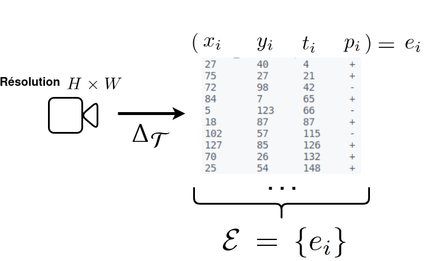
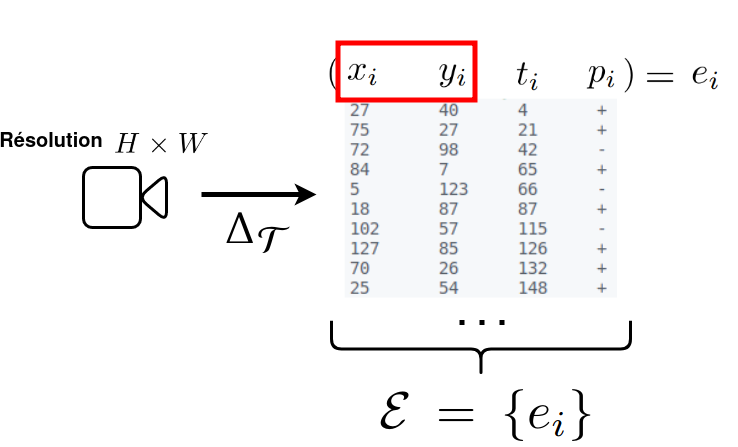
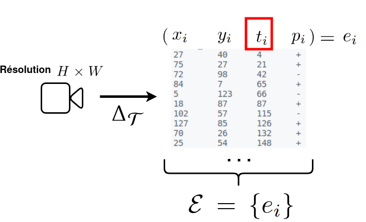
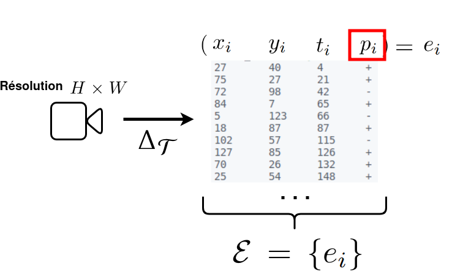
Discrétisation sur $T$ étapes temporelles

Donnée - Caméra Événementielle
Deux catégories selon la dynamique de la scène
Comportement
statique
Comportement dynamique
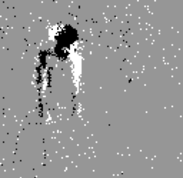Donnée - Image Statique
❌ Les images statiques ($\in \mathbb{R}$) ne sont pas adaptés pour le traitement par des neurones impulsionnels
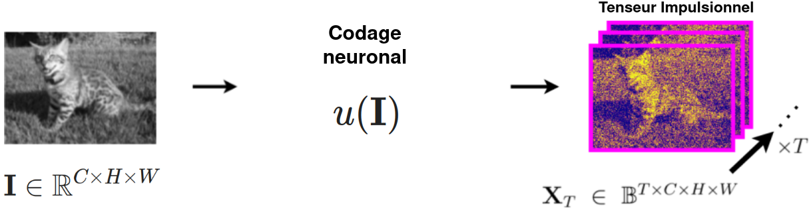

Apprentissage Profond
- Réseaux de neurones convolutifs (CNNs)
- AlexNet[Kzh2012] (2012) atteint les meilleures performances sur ImageNet[Deng2009]
- 2D-CNN : convolutions 2D pour les images
- 3D-CNN : convolutions 3D pour les vidéos
- Plus récemment (2020)
- Transformeur de Vision (ViT) $\Rightarrow$ complexité 📈 (ex. ViT-22B [Dehghani2023])
- Modèles de fondations : modèles massifs polyvalents
Formulation - Encodeur Convolutif
$f_{\alpha}(\mathbf{I}) = \mathcal{F}$
Apprentissage Profond et Événements
- ANNs sont très courants pour traiter les événements
- 📈 Tâches de vision
- Reconnaissance, détection d'objets, segmentation, tracking, synthétisation 3D
- 📈 Contextes
- Conduite autonome, robotique, lecture labiale,
- 📈 Architectures
- 2D-/3D-CNNs, ViTs, encodeur-décodeur
Réseaux de Neurones Impulsionnels
Réseaux de neurones composés de neurones impulsionnels
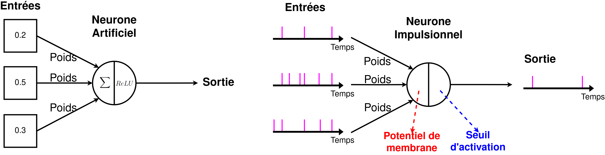
Neurone "Integrate-and-Fire" (IF)
[Lapicque1907]
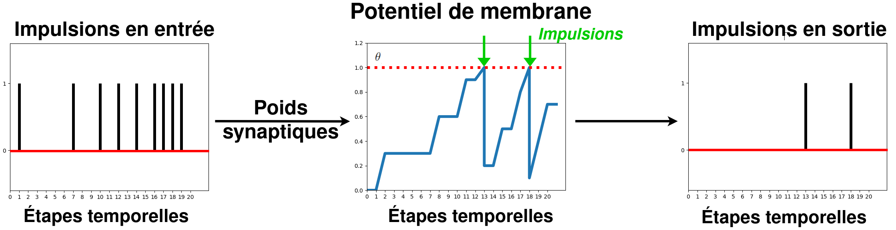Règles d'Apprentissage
- Conversion ANN-vers-SNN
- SNNs profonds et performants
- Lents et consommateurs
- Règles d'apprentissage biologique (STDP)
- Non-supervisé, adapté au matériel spécialisé
- Complexité des SNNs limitée
- Rétropropagation 🏅
- SNN $=$ Réseau de neurones récurrents
- $\Rightarrow$ Rétropropagation à travers le temps
- ✅ Apprentissage direct du SNN
- ✅ SNNs profonds et performants
- ⚠️ Non-différentiabilité des impulsions
- $\Rightarrow$ Apprentissage par Substitut du Gradient (SG)[Neftci2019]
Apprentissage par Substitut du Gradient
Problème du neurone mort[Eshraghian2021]
Problème du neurone mort[Eshraghian2021]
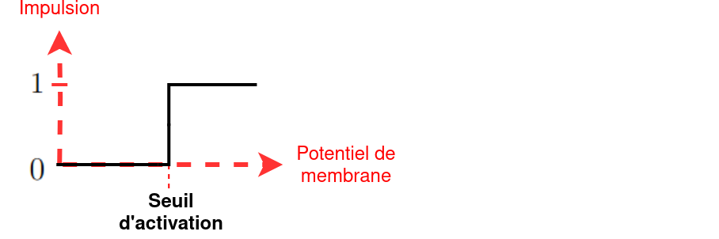Problème du neurone mort[Eshraghian2021]
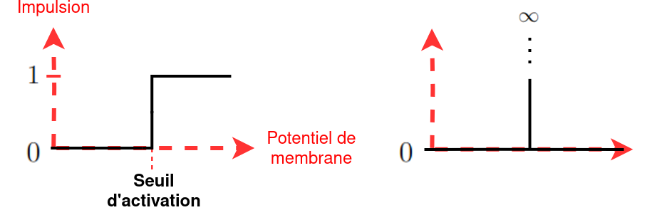Remplacer la dérivée par un substitut
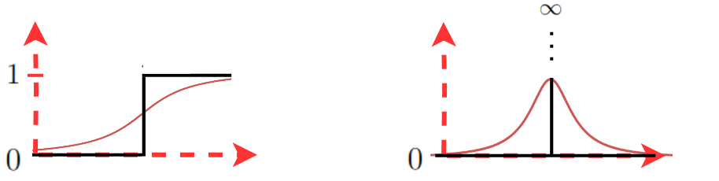Revue - SNNs en Vision
- Début de thèse (2020-2021) :
- Hautes performances pour la classification (CIFAR10-DVS[Li2017], ImageNet [Deng2009], ...)
- Diversification des tâches (2021 - ...) : segmentation[Kim2022], détection[Cordone2022], profondeur[Rancon2021], ...
Revue - Vision Événementielle
- Intérêt croissant $\Rightarrow$ développement rapide du domaine
- Diversification des tâches de vision traitées
- Diversification des contextes d'applications
Verrous Scientifiques
- SNNs profonds :
- Progrès rapides
- Retard sur la compréhension des aspects de conception
- $\Rightarrow$ Études expérimentales
- Vision événementielle :
- Diversification des contextes d'utilisation $\Rightarrow$ construction de nouvelles BDDs annotées
- Processus coûteux
- $\Rightarrow$ Réduire ce coût
Étude des Réseaux de Neurones Impulsionnels
par la Localisation d'Objet
📔 "Deep spiking convolutional neural network for single object localization based on deep continuous local learning." 2021 International Conference on Content-Based Multimedia Indexing (CBMI). IEEE, 2021.
📔 "Spiking neural networks for frame-based and event-based single object localization." Neurocomputing 559 (2023): 126805.
Manque d'Analyses
- Historiquement (SNNs peu profonds avec STDP) :
- Images statiques : Supériorité du codage temporel
- Latence temporelle ($T$) : une grande valeur $T$ est préférable
- Robustesse aux corruptions
- ⚠️ Est-ce que l'apprentissage par SG est différent ?
- Réponse inconnue
- $\Rightarrow$ Études expérimentales
Formulation - Localisation d'Objet
Contenu de l'Étude
- Deux modalités : images statiques et événements
- Influence de trois paramètres sur les performances
- Latence temporelle
- Corruptions des capteurs $\Rightarrow$ robustesse
- Le codage neuronal d'une image statique
- Estimation du coût énergétique
- Comparaison systématique avec un ANN
Encodeur Convolutif - ANN

Encodeur Convolutif - SNN
Bases de Données
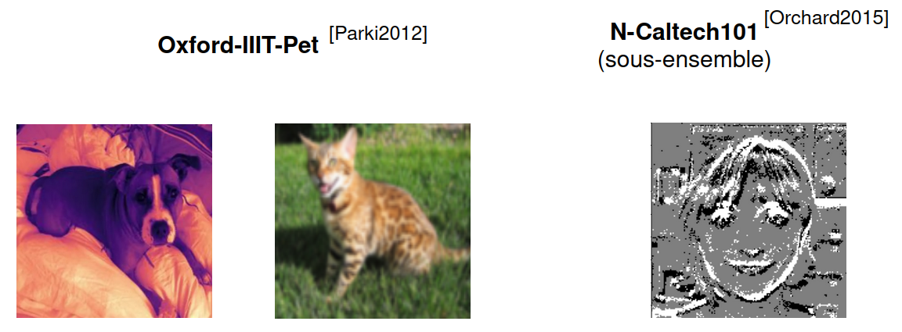 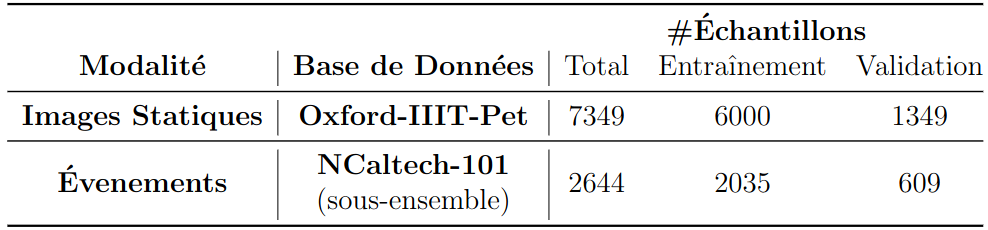Codages Neuronaux Étudiés
Codage entraînable
Étude sur la Latence Temporelle
Protocole
- Définir un nombre $T$ d'étapes temporelles
- Effectuer un entraînement
- Mesurer la performance de localisation (% $mIoU$) sur l'ensemble de validation
Latence Temporelle - Images Statiques
- Aucune correlation significative
- SNN compétitif (au mieux, $\Delta = 2.97$%)
- Contraire au STDP : codage temporel $<<$
Latence Temporelle - Événements
- ANN : Les performances restent constantes
- SNN : $T$ 📉 $\rightarrow$ performances 📈
- À partir de $T=8$, le SNN est meilleur
Étude sur la Robustesse aux Corruptions
Protocole
 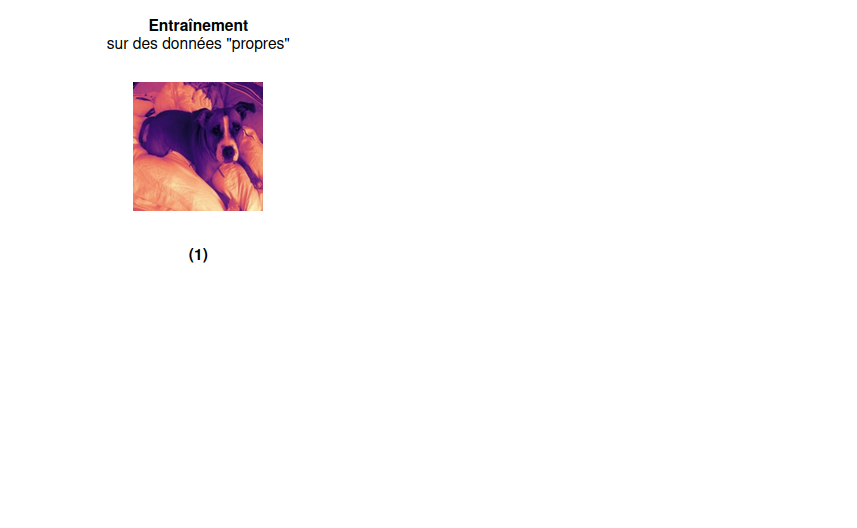
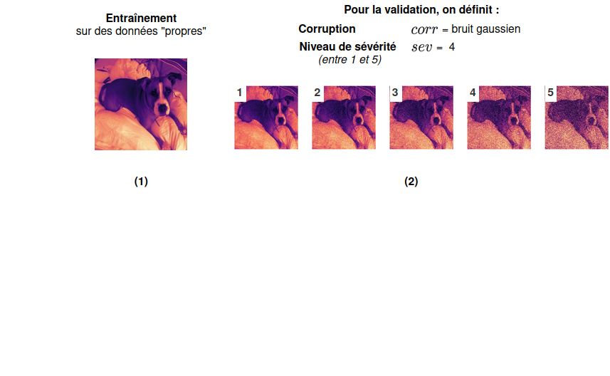
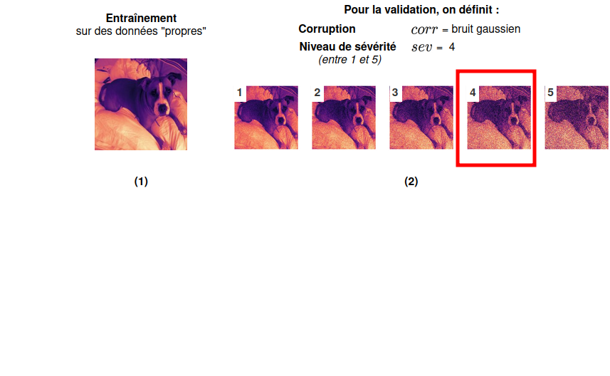
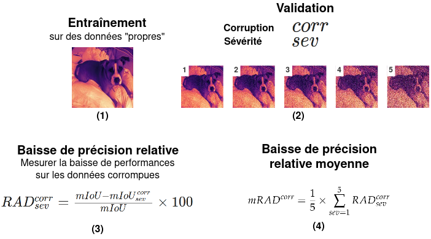
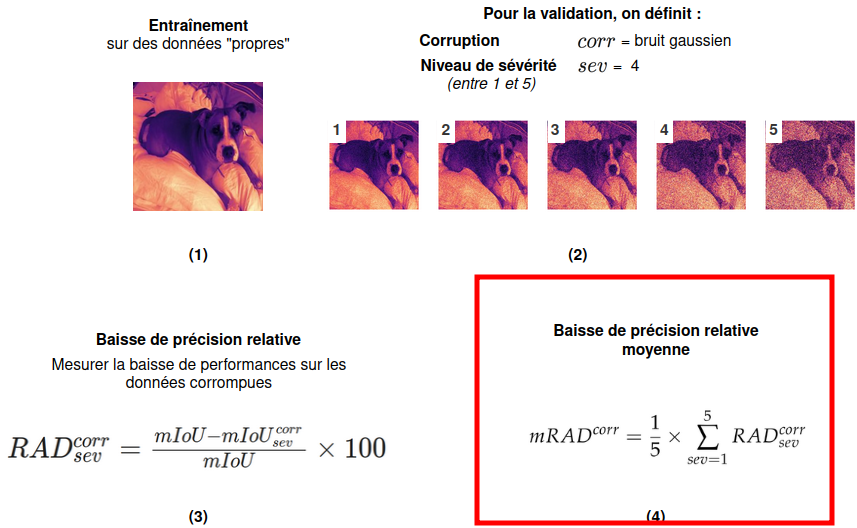
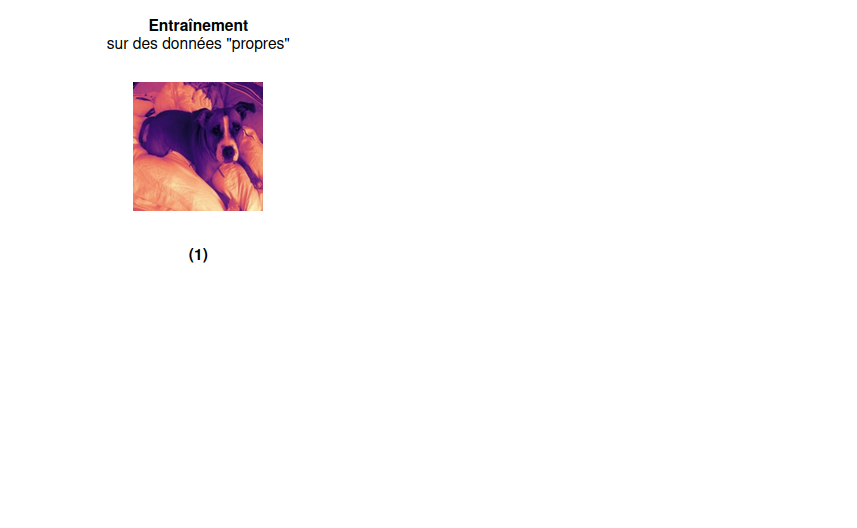
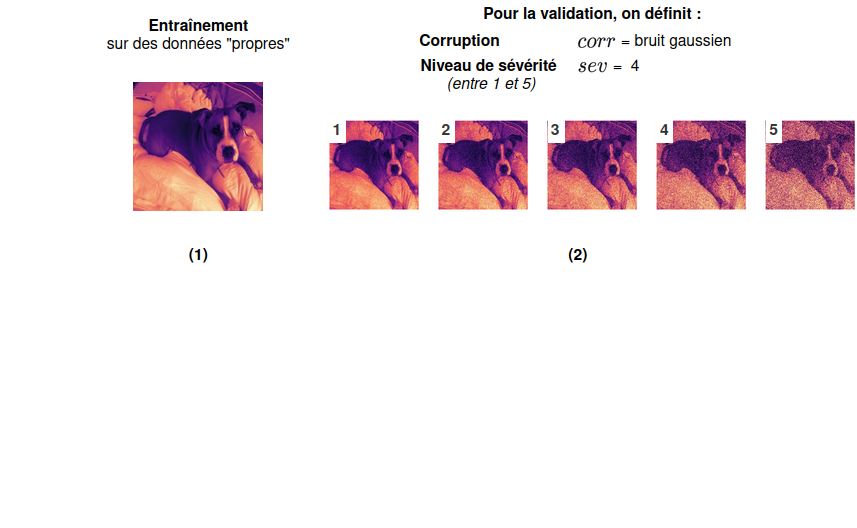
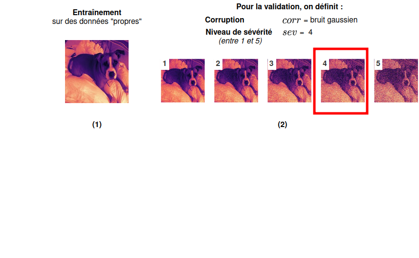
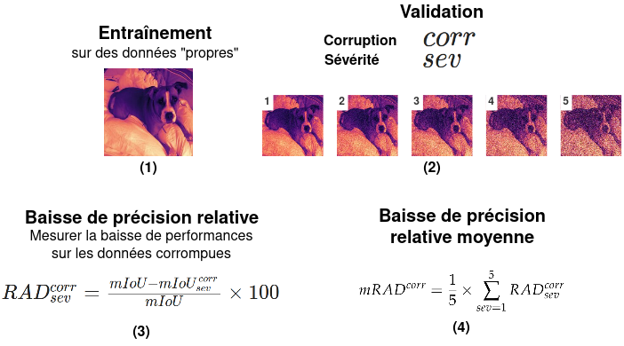
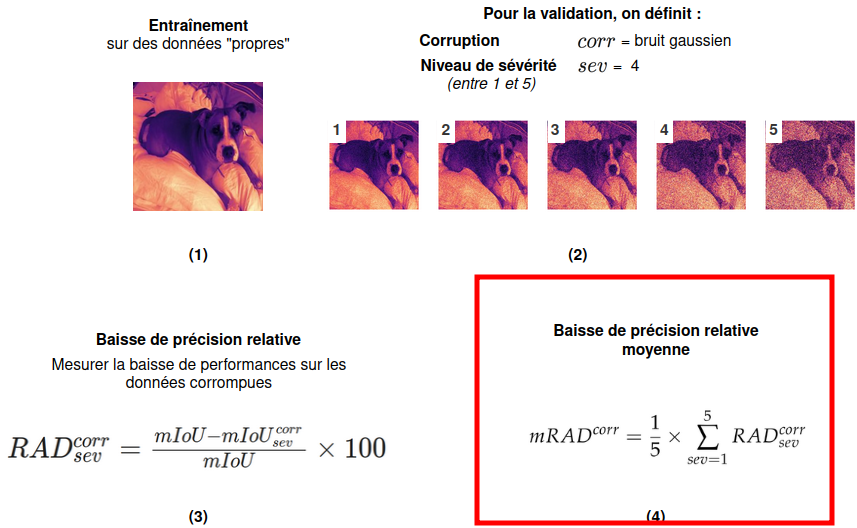
Robustesse - Images Statiques
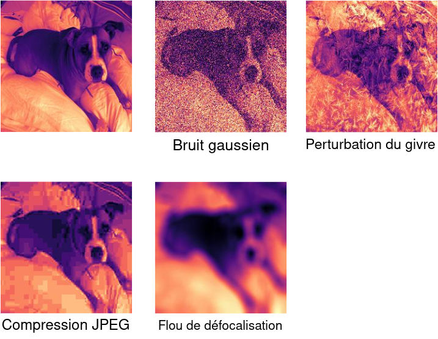Images Statiques - Corruptions
- Temporel : très robuste sauf pour le givre
- Saccades : contraire observé
- Fréquentiel : grande robustesse générale
Robustesse - Événements

Robustesse - Événements
- Sensibilité au bruit du SNN $\rightarrow$ hypothèse des potentiels de membrane
Consommation Énergétique
- Estimation de l'énergie consommée[Kim2022]
- Calcul des FLOPs effectués lors de l'inférence
- ℹ️ (lié au nombre d'impulsions émises)
- Estimation sur une puce CMOS de 45nm [Horowitz2024] :
- $E_{ANN} \rightarrow$ énergie consommée par l'ANN (en mJ)
- $E_{SNN} \rightarrow$ énergie consommée par le SNN
- $\Rightarrow$ On reporte le ratio : $\frac{E_{ANN}}{E_{SNN}}$
- Net avantage pour les SNNs
- Les flux d'événements sont comparables aux codages neuronaux intensifs
Bilan de l'Étude
- Supériorité des faibles latences
- SNN plus rapide, plus économe, voire plus performant
- Codages Neuronaux : intérêt du codage fréquentiel
- Contradictions avec les études précédentes (STDP)[TODO]
- Faiblesse du codage temporel
- Influence de la latence temporelle
- $\Rightarrow$ Remise en cause des connaissances
Pré-entraînement
Auto-supervisé
pour la Vision
Événementielle
📔 "Exploring Joint Embedding Architectures and Data Augmentations for Self-Supervised Representation Learning in Event-Based Vision." Proceedings of the IEEE/CVF Conference on Computer Vision and Pattern Recognition (CVPR) 2023.
Contexte
- 📈 Modèles profonds pour la vision événementielle
- Apprentissage supervisé : nécessite beaucoup de données annotées
- Complexifie le développement de nouvelles applications
🗨️ Comment réduire le besoin en annotations pour les modèles profonds en vision événementielle ?
Solutions Existantes
- Supervisé : utiliser une grande BDD générique annotée puis affiner
- ❌ peu de BDDs événementielles pertinentes
- Apprentissage Auto-supervisé de Représentation (SSRL) : capturer les propriétés et motifs intrinsèques des données
- ✅ Pas d'annotations requises
- ✅ Proche du domaine d'application
SSRL événementiel
- Trois travaux similaires (2022 - 2023)[TODO,TODO,TODO]
- ❌ Limités à du comportement statique
- ❌ Expérimentations : évaluations différentes
- ❌ Concentrés sur un type de réseau (ViT / SNN)
- ❌ Les modèles étudiés sont lourds
- Constat
- Domaine prometteur mais encore sous-exploité
Travaux
- Nouvelle méthode de référence pour des encodeurs convolutifs légers (CSNN, 2D-CNN, et 3D-CNN)
- Polyvalence des données : BDDs à comportement statique et dynamique
- Protocoles d'évaluation standardisés
- Étude sur les augmentations de données dans le cadre du SSRL
Méthode
Augmentation de Données Événementielle (EDA)
ℹ️ Une EDA peut être une composition d'autres EDAs
Méthode
Architecture d'Encodage Conjoint[Bardes2022][Zbontar2021]
Méthode - Encodeurs Étudiés
- 2D-CNN : ResNet-18[He2016]
- CSNN : SEW-ResNet-18[Fang2021]
- 3D-CNN : MC3-ResNet-18[TODOresnet3d]
ℹ️ Même architecture et même complexité
Méthode - Variantes
- 👬 Jumeaux : architecture classique avec poids partagés
- 👨🎓🧑🏫 Étudiant-Professeur : CSNN (étudiant) couplé à 2D-/3D-CNN (professeur)
Méthode - Augmentations de Données
À chaque inférence, une composition $d_A$ / $d_B$ est échantillonnée d'une distribution $D$
⚠️ Définir une distribution $D$ efficace est essentiel ⚠️
Augmentations Étudiées
Évaluation des Performances
❌ Pas de protocole d'évaluation commun en SSRL événementiel
- Définir des protocoles d'évaluation standards pour les travaux futurs
- Problèmes de classification $\rightarrow$ taux de précision
- Trois protocoles pour évaluer des aspects spécifiques du SSRL
Protocole n°1 - Évaluation Linéaire
🎯 Est-ce que la méthode de SSRL extrait des caractéristiques pertinentes ?
Protocole n°2 - Transfert d'Apprentissage
🎯 Est-ce que les caractéristiques apprises peuvent être transférées à d'autres données ?
Protocole n°3 - Apprentissage Semi-supervisé
🎯 Est-ce que la méthode de SSRL permet de réduire le besoin en annotations ?
Étude sur les EDAs
🎯 Évaluer l'intérêt des EDAs pour le SSRL
- Protocole d'évaluation linéaire sur DVSGesture
- Trois étapes incrémentales : une étape par catégorie
- Pour chaque étape, on conserve la combinaison d'EDAs la plus performante de l'étape précédente
Étude sur les EDAs
Étape 1 : EDAs Communes
Étape 2 : EDAs Géométriques
Étape 3 : EDAs en découpage
- Une EDA (rouge) ‹ deux EDAs (vert) ‹ Trois EDAs (bleu)
- Dynamiques pour 3D-CNN et CSNN
- Statiques pour 2D-CNN
EventCopyDropest systématiquement 🥇 ou 🥈
Étude sur les EDAs - Résumé
- EDAs communes : au plus le mieux
- Une EDA géométrique et une EDA en découpage $\rightarrow$ ➕ performances
- Intérêt des relations
OneOf(EventDrop, ...)
$D = \{\texttt{Noise,Crop,PolFlip,StatDynGeo,}$ $\texttt{EventCopyDrop}\}$
Évaluation des Performances
- Résultats des protocoles Semi-supervisé et Transfert d'Apprentissage
- Mise en perspective avec les modèles supervisés
- Pour un protocole donné, on rapporte :
- Le meilleur modèle supervisé de l'état de l'art
- Les deux meilleurs résultats obtenus sur le SSRL événementiel
Bilan des Contributions
- Méthode de SSRL événementielle
- Performances compétitives voire surpassant les modèles supervisés
- Étude sur les EDAs pour la SSRL
- Propositions de nouvelles techniques
- Protocoles d'évaluation standardisés
- Fondations pour la SSRL événementielle
Limitations
- Inégalités des encodeurs
- ❌ $CSNN < 2D\text{ et }3D$
- Protocoles d'évaluation basés sur la classification uniquement
- ❌ Information spatiale
- Les caractéristiques sont extraites sur l'ensemble des événements
- ❌ Traitement de l'information spatio-temporel
Conclusion
Étude des SNNs profonds par la Localisation d'Objet
Notre étude fournit des informations clés sur des choix de conception des SNNs profonds.
Le SNN conçu montre l'intérêt en termes de consommation énergétique par rapport à un ANN similaire.
Les conclusions antérieures sur les SNNs ne sont pas vérifiées pour l'apprentissage par SG $\Rightarrow$ Remise en cause.
Étude des SNNs profonds par la Localisation d'Objet
Travaux Futurs
- Déploiement et analyses sur matériel neuromorphique
- Quelles sont les spécificités d'un SNN déployé ?
- Études supplémentaires
- Qualité de l'apprentissage, attaques adverses, etc.
- Vers des tâches plus complexes...
- détection d'objets, segmentation panoptique, ...
SSRL événementiel
Le SSRL événementiel accomplit avec succès la réduction du besoin en annotations.
Cela ouvre des opportunités d'accélérer grandement la diversification de la vision événementielle.
Possibilité de voir des BDDs événementielles comportant beaucoup de données et peu d'annotations.
SSRL Événementiel
Travaux Futurs
- Méthodes spécialisées pour un type d'encodeur
- Proposer des protocoles d'évaluation diversifiés (détection d'objets, ...)
- Nouveaux contextes applicatifs
- Modèles de fondation événementiels
Séance de Questions
Publications 6️⃣
- Conférences internationales à comité de lecture 5️⃣
- Journal international à comité de lecture 1️⃣
Divers
- Encadrements de stages et projets Master 5️⃣
- Enseignement 1️⃣
- 🥇 Doctoriales
- 📣 Médiation scientifique
Contributions
- "Deep spiking convolutional neural network for single object localization based on deep continuous local learning." 2021 International Conference on Content-Based Multimedia Indexing (CBMI). IEEE, 2021.
- "Spiking neural networks for frame-based and event-based single object localization." Neurocomputing 559 (2023): 126805.
- "Exploring Joint Embedding Architectures and Data Augmentations for Self-Supervised Representation Learning in Event-Based Vision." Proceedings of the IEEE/CVF Conference on Computer Vision and Pattern Recognition (CVPR) 2023.
- "Bina-rep event frames: A simple and effective representation for event-based cameras." 2022 IEEE International Conference on Image Processing (ICIP).
- "Spiking-Fer: Spiking Neural Network for Facial Expression Recognition With Event Cameras." 2023 International Conference on Content-Based Multimedia Indexing (CBMI). ACM, 2023..
- "Review on indoor RGB-D semantic segmentation with deep convolutional neural networks." 2021 International Conference on Content-Based Multimedia Indexing (CBMI). IEEE, 2021.
Références
- [Bokovoy2019]: A. Bokovoy et al. "Real-time Vision-based Depth Reconstruction with NVidia Jetson"
- [Desislavov2023]: R. Desislavov et al. "Trends in AI inference energy consumption: Beyond the performance-vs-parameter laws of deep learning"
- [Kzh2012]: A. Kzh, et al. "Imagenet classification with deep convolutional neural networks"
- [He2016]: K. He, et al. "Deep residual learning for image recognition"
- [Deng2009]: J. Deng, et al. "Imagenet: A large-scale hierarchical image database"
- [Lapicque1907]: LM Lapicque, "Recherches quantitatives sur l’excitation electrique des nerfs"
- [Neftci2019]: E. Neftci et al., "Surrogate gradient learning in spiking neural networks: Bringing the power of gradient-based optimization to spiking neural networks"
- [Li2017]: H. Li et al., "Cifar10-dvs: an event-stream dataset for object classification."
- [Kim2022]: Y. Kim et al. "Beyond Classification: Directly Training Spiking Neural Networks for Semantic Segmentation"
- [Cordone2022]: L. Cordone et al. "Object Detection with Spiking Neural Networks on Automotive Event Data"
- [Rancon2021]: U. Rançon et al. "StereoSpike: Depth Learning with a Spiking Neural Network"
- [Horowitz2014]: M. Horowitz "Computing's energy problem (and what we can do about it)"
- [Bardes2022]: A. Bardes et al. "VICReg: Variance-Invariance-Covariance Regularization For Self-Supervised Learning"
- [Zbontar2021]: J. Zbontar et al. "Barlow Twins: Self-Supervised Learning via Redundancy Reduction"
- [Fang2021]: W. Fang et al. "Deep residual learning in spiking neural networks"
- [Tran2017]: D. Tran et al. "A Closer Look at Spatiotemporal Convolutions for Action Recognition"
- [Dehghani2023]: M. Dehghani et al. "Scaling Vision Transformers to 22 Billion Parameters"
Annexes
État de l'Art
Consommation Énergétique
Estimation de l'énergie consommée lors d'une inférence des modèles de l'état de l'art par année[Desislavov2023]
Réseaux de Neurones Impulsionnels
Apprentissage par Subtitut du Gradient (SG)


Annexes
Bina-Rep
Bina-Rep
Annexes
Localisation
Images Statiques - Latence
Consommation énergétique
Annexes
SSRL Événementiel
dIoU
VICReg
- Invariance : minimiser la distance entre les deux encastrements de la même entrée
- Variance : maintenir la variance de chaque variable d'un même vecteur dans un lot au-dessus d'un seuil
- Covariance : minimiser la covariance entre les valeurs d'un même vecteur
Augmentations de Données Étudiées
Exemple
Augmentations Communes
Augmentations Communes
Augmentations Communes
Augmentations Communes
Augmentations en Découpage
Augmentations en Découpage
Augmentations en Découpage
Augmentations en Découpage
Augmentations en Découpage
Augmentations en Découpage
Augmentations en Découpage
Augmentations Géométriques
Augmentations Géométriques
Augmentations Géométriques
Augmentations Géométriques
Augmentations Géométriques
Augmentations Géométriques
📖 Transformations couramment utilisées, ne partagent pas de caractéristiques communes.
📖 Transformations impliquant la suppression d'événements.


📖 Transformations impliquant une distorsion spatiale des événements.


Bruit d'activité de fond (Noise)
Inversion de polarité (PolFlip)
Recadrage (Crop)
Découpe par zone (Cutout)
Découpe par durée
Découpe aléatoire
EventDrop
🆕 EventCopy
🆕 EventCopyDrop
Translation statique (StatTran)
Rotation statique (StatRot)
🆕 Translation dynamique (DynTran)
🆕 Rotation dynamique (DynRot)
🆕 StatDynGeo
Distribution EDAs
Étude sur les EDAs
Résultats
Évaluation des Performances
Évaluation Linéaire et Apprentissage Semi-supervisé
Évaluation Linéaire et Apprentissage Semi-supervisé
Évaluation Linéaire et Apprentissage Semi-supervisé
Évaluation Linéaire et Apprentissage Semi-supervisé
Évaluation Linéaire et Apprentissage Semi-supervisé
Évaluation Linéaire et Apprentissage Semi-supervisé
Transfert d'Apprentissage
Transfert d'Apprentissage
Transfert d'Apprentissage
2D-/3D-CNNs $>$ CSNN
Intérêt de la variante "Étudiant-Professeur"
✅ transférabilité des représentations apprises
Mise en Perspective - SSRL événementiel
ASL-DVS

Mise en Perspective - SSRL événementiel
N-CARS
Mise en Perspective - SSRL événementiel
N-CALTECH101
Mise en Perspective - SSRL événementiel
DVSGesture
Mise en Perspective - SSRL événementiel
DailyAction-DVS
Représentation - Uniformité et Tolérance
Expliquer ce que c'est
Représentation - Uniformité et Tolérance
Résultat + interpretations